pacman::p_load(sf, tmap, tidyverse)Hands-o Exe 08- Modified codes using the new tmap package
Choropleth Mapping with R
mpsz <- st_read(dsn = "data/geospatial",
layer = "MP14_SUBZONE_WEB_PL")Reading layer `MP14_SUBZONE_WEB_PL' from data source
`C:\dewschan\ISSS608\Hands-on_Exe\data\geospatial' using driver `ESRI Shapefile'
Simple feature collection with 323 features and 15 fields
Geometry type: MULTIPOLYGON
Dimension: XY
Bounding box: xmin: 2667.538 ymin: 15748.72 xmax: 56396.44 ymax: 50256.33
Projected CRS: SVY21popdata <- read_csv("data/aspatial/respopagesextod2011to2020.csv")popdata <- read_csv("data/aspatial/respopagesextod2011to2020.csv")popdata2020 <- popdata %>%
filter(Time == 2020) %>%
group_by(PA, SZ, AG) %>%
summarise(`POP` = sum(`Pop`)) %>%
ungroup() %>%
pivot_wider(names_from=AG,
values_from=POP) %>%
mutate(YOUNG = rowSums(.[3:6])
+rowSums(.[12])) %>%
mutate(`ECONOMY ACTIVE` = rowSums(.[7:11])+
rowSums(.[13:15]))%>%
mutate(`AGED`=rowSums(.[16:21])) %>%
mutate(`TOTAL`=rowSums(.[3:21])) %>%
mutate(`DEPENDENCY` = (`YOUNG` + `AGED`)
/`ECONOMY ACTIVE`) %>%
select(`PA`, `SZ`, `YOUNG`,
`ECONOMY ACTIVE`, `AGED`,
`TOTAL`, `DEPENDENCY`)popdata2020 <- popdata2020 %>%
mutate_at(.vars = vars(PA, SZ),
.funs = funs(toupper)) %>%
filter(`ECONOMY ACTIVE` > 0)mpsz_pop2020 <- left_join(mpsz, popdata2020,
by = c("SUBZONE_N" = "SZ"))write_rds(mpsz_pop2020, "data/rds/mpszpop2020.rds")## Revised code with tmap version 4.0
tm_shape(mpsz_pop2020)+
tm_polygons(fill = "DEPENDENCY",
fill.scale = tm_scale_intervals(
style = "quantile",
n = 5,
values = "brewer.blues"),
fill.legend = tm_legend(
title = "Dependency ratio")) +
tm_title("Distribution of Dependency Ratio by planning subzone") +
tm_layout(frame = TRUE) +
tm_borders(fill_alpha = 0.5) +
tm_compass(type="8star", size = 2) +
tm_grid(alpha =0.2) +
tm_credits("Source: Planning Sub-zone boundary from Urban Redevelopment Authorithy (URA)\n and Population data from Department of Statistics DOS",
position = c("left", "bottom"))
tmap_mode("plot")
qtm(mpsz_pop2020,
fill = "DEPENDENCY")
tm_shape(mpsz_pop2020) +
tm_polygons()
tm_shape(mpsz_pop2020)+
tm_polygons("DEPENDENCY")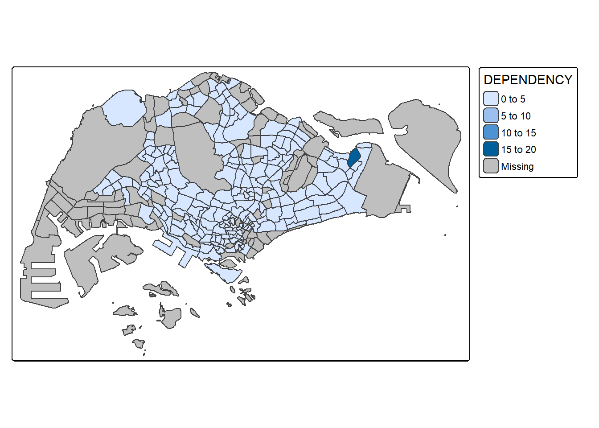
tm_shape(mpsz_pop2020)+
tm_fill("DEPENDENCY")
tm_shape(mpsz_pop2020)+
tm_fill("DEPENDENCY") +
tm_borders(lwd = 0.1, alpha = 1)
tm_shape(mpsz_pop2020)+
tm_fill("DEPENDENCY",
n = 5,
style = "jenks") +
tm_borders(alpha = 0.5)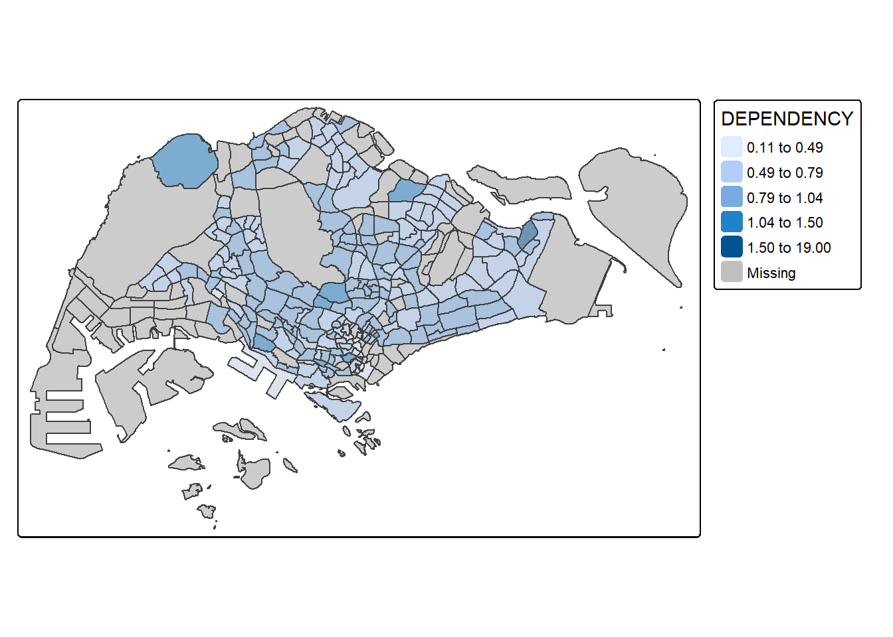
tm_shape(mpsz_pop2020)+
tm_fill("DEPENDENCY",
n = 5,
style = "equal") +
tm_borders(alpha = 0.5)
summary(mpsz_pop2020$DEPENDENCY) Min. 1st Qu. Median Mean 3rd Qu. Max. NA's
0.1111 0.7147 0.7866 0.8585 0.8763 19.0000 92 tm_shape(mpsz_pop2020)+
tm_fill("DEPENDENCY",
n = 6,
style = "quantile",
palette = "Blues") +
tm_borders(alpha = 0.5)
tm_shape(mpsz_pop2020)+
tm_fill("DEPENDENCY",
style = "quantile",
palette = "-Greens") +
tm_borders(alpha = 0.5)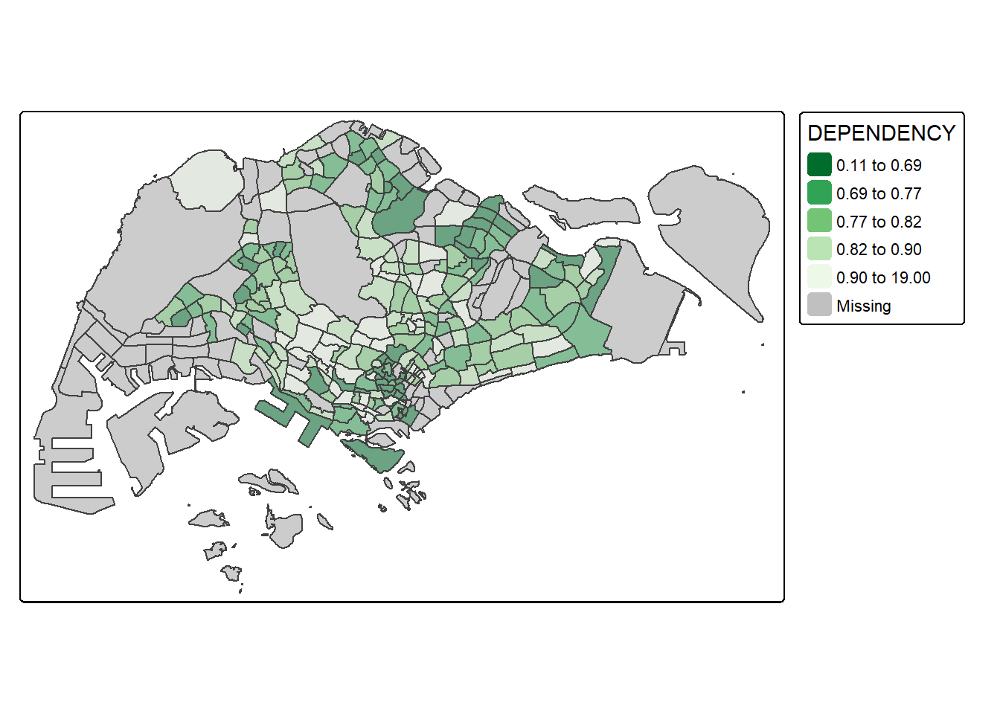
tm_shape(mpsz_pop2020)+
tm_fill("DEPENDENCY",
style = "jenks",
palette = "Blues",
legend.hist = TRUE,
legend.is.portrait = TRUE,
legend.hist.z = 0.1) +
tm_layout(main.title = "Distribution of Dependency Ratio by planning subzone \n(Jenks classification)",
main.title.position = "center",
main.title.size = 1,
legend.height = 0.45,
legend.width = 0.35,
legend.outside = FALSE,
legend.position = c("right", "bottom"),
frame = FALSE) +
tm_borders(alpha = 0.5)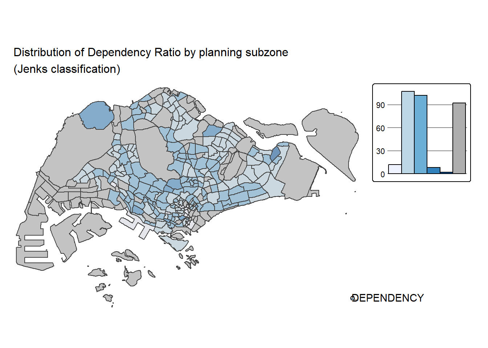
tm_shape(mpsz_pop2020)+
tm_fill("DEPENDENCY",
style = "quantile",
palette = "-Greens") +
tm_borders(alpha = 0.5) +
tmap_style("classic")
tm_shape(mpsz_pop2020)+
tm_polygons(fill = "DEPENDENCY",
fill.scale = tm_scale_intervals(
style = "quantile",
n = 5,
values = "brewer.blues"),
fill.legend = tm_legend(
title = "Dependency ratio")) +
tm_title("Distribution of Dependency Ratio by planning subzone") +
tm_layout(frame = TRUE) +
tm_borders(fill_alpha = 0.5) +
tm_compass(type="8star", size = 2) +
tm_grid(alpha =0.2) +
tm_credits("Source: Planning Sub-zone boundary from Urban Redevelopment Authorithy (URA)\n and Population data from Department of Statistics DOS",
position = c("left", "bottom"))
tmap_style("white")tm_shape(mpsz_pop2020)+
tm_fill(c("YOUNG", "AGED"),
style = "equal",
palette = "Blues") +
tm_layout(legend.position = c("right", "bottom")) +
tm_borders(alpha = 0.5) +
tmap_style("white")
tm_shape(mpsz_pop2020)+
tm_polygons(c("DEPENDENCY","AGED"),
style = c("equal", "quantile"),
palette = list("Blues","Greens")) +
tm_layout(legend.position = c("right", "bottom"))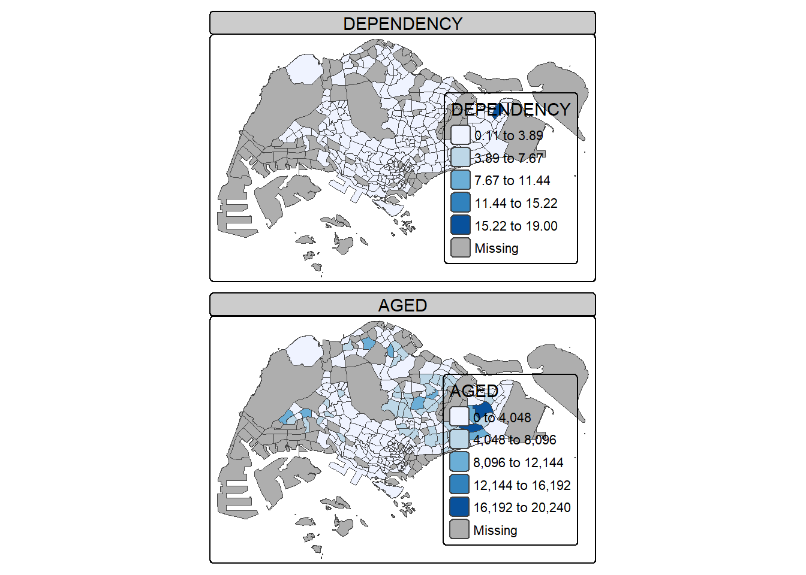
youngmap <- tm_shape(mpsz_pop2020)+
tm_polygons("YOUNG",
style = "quantile",
palette = "Blues")
agedmap <- tm_shape(mpsz_pop2020)+
tm_polygons("AGED",
style = "quantile",
palette = "Blues")
tmap_arrange(youngmap, agedmap, asp=1, ncol=2)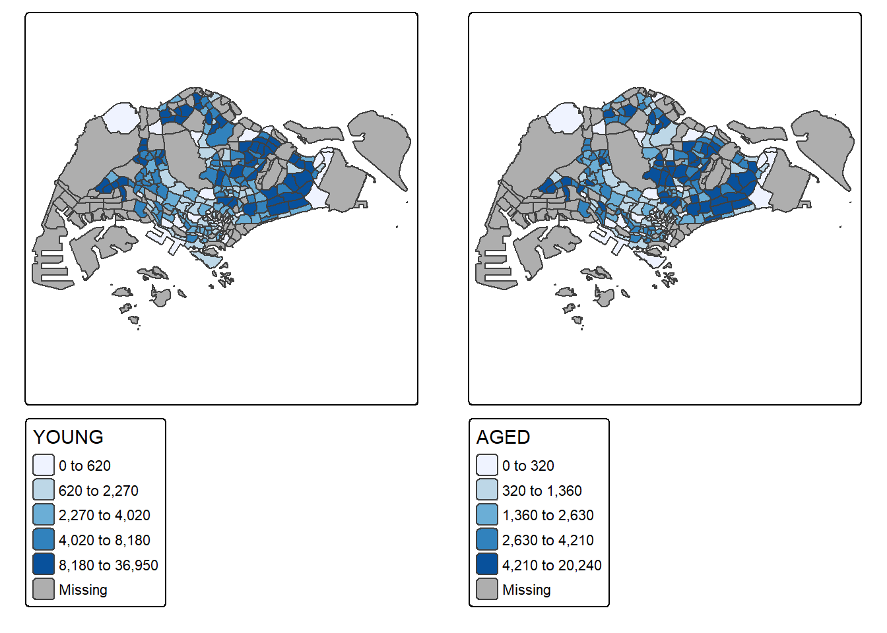
tm_shape(mpsz_pop2020[mpsz_pop2020$REGION_N=="CENTRAL REGION", ])+
tm_fill("DEPENDENCY",
style = "quantile",
palette = "Blues",
legend.hist = TRUE,
legend.is.portrait = TRUE,
legend.hist.z = 0.1) +
tm_layout(legend.outside = TRUE,
legend.height = 0.45,
legend.width = 5.0,
legend.position = c("right", "bottom"),
frame = FALSE) +
tm_borders(alpha = 0.5)
Visualising Geospatial Point Data
sgpools <- read_csv("data/aspatial/SGPools_svy21.csv")list(sgpools) [[1]]
# A tibble: 306 × 7
NAME ADDRESS POSTCODE XCOORD YCOORD `OUTLET TYPE` `Gp1Gp2 Winnings`
<chr> <chr> <dbl> <dbl> <dbl> <chr> <dbl>
1 Livewire (Mar… 2 Bayf… 18972 30842. 29599. Branch 5
2 Livewire (Res… 26 Sen… 98138 26704. 26526. Branch 11
3 SportsBuzz (K… Lotus … 738078 20118. 44888. Branch 0
4 SportsBuzz (P… 1 Sele… 188306 29777. 31382. Branch 44
5 Prime Serango… Blk 54… 552542 32239. 39519. Branch 0
6 Singapore Poo… 1A Woo… 731001 21012. 46987. Branch 3
7 Singapore Poo… Blk 64… 370064 33990. 34356. Branch 17
8 Singapore Poo… Blk 88… 370088 33847. 33976. Branch 16
9 Singapore Poo… Blk 30… 540308 33910. 41275. Branch 21
10 Singapore Poo… Blk 20… 560202 29246. 38943. Branch 25
# ℹ 296 more rowssgpools_sf <- st_as_sf(sgpools,
coords = c("XCOORD", "YCOORD"),
crs= 3414)The tmap view is changed to plot to
tmap_mode("plot")tm_shape(sgpools_sf) +
tm_bubbles(fill = "red",
size = 1,
col = "black",
lwd = 1)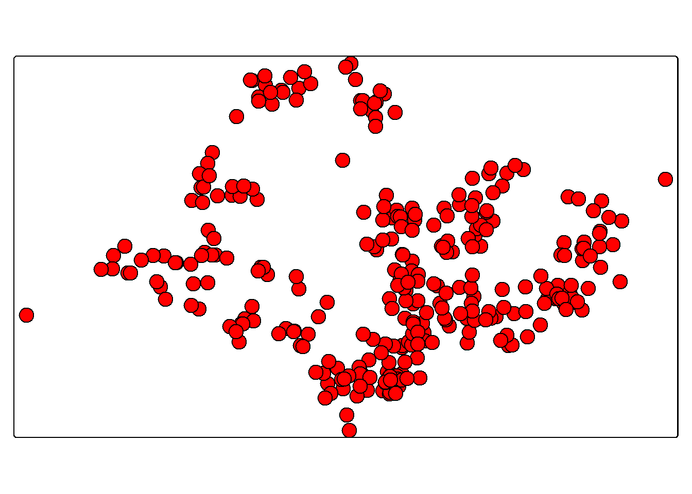
tm_shape(sgpools_sf) +
tm_bubbles(fill = "red",
size = "Gp1Gp2 Winnings",
col = "black",
lwd = 1)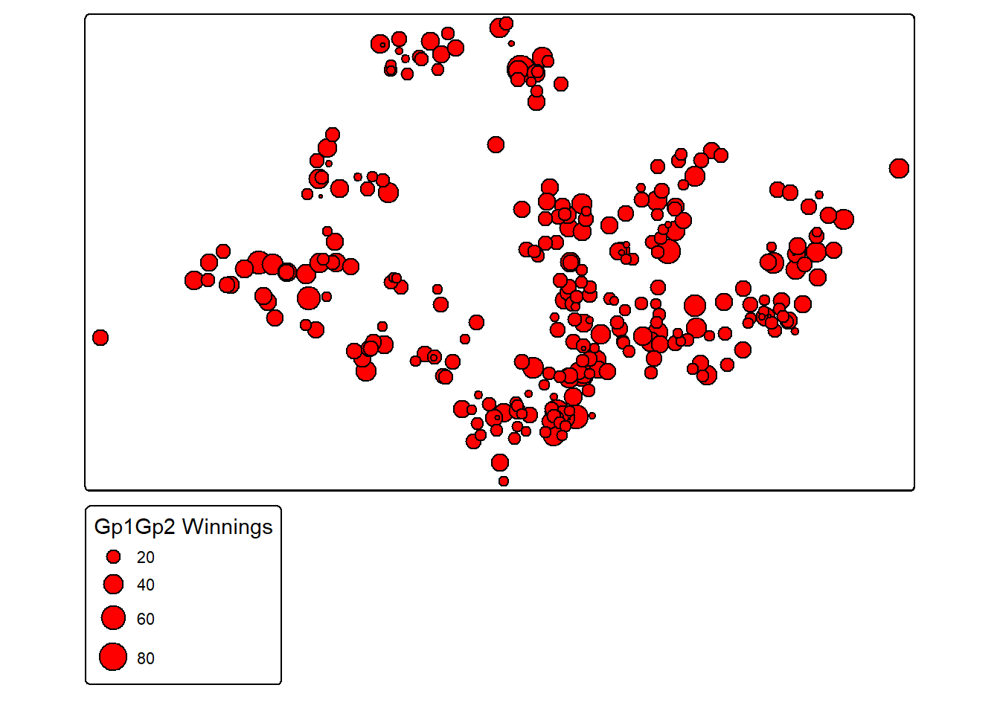
tm_shape(sgpools_sf) +
tm_bubbles(fill = "OUTLET TYPE",
size = "Gp1Gp2 Winnings",
col = "black",
lwd = 1)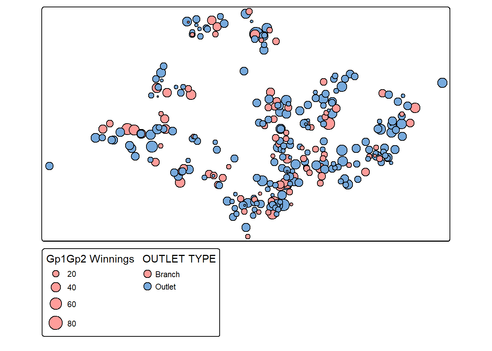
tm_shape(sgpools_sf) +
tm_bubbles(fill = "OUTLET TYPE",
size = "Gp1Gp2 Winnings",
col = "black",
lwd = 1) +
tm_facets(by= "OUTLET TYPE",
nrow = 1,
sync = TRUE)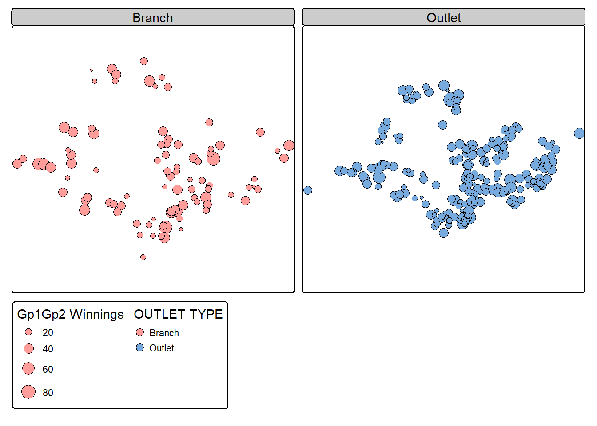
Analytical Mapping
NGA_wp <- read_rds("data/rds/NGA_wp.rds")p1 <- tm_shape(NGA_wp) +
tm_polygons(col = "wp_functional",
n = 10,
style = "equal",
palette = "Blues",
border.col = "black",
lwd = 0.1,
col_alpha = 1) +
tm_title("Distribution of functional water point by LGAs") +
tm_layout(legend.outside = FALSE)p2 <- tm_shape(NGA_wp) +
tm_polygons(col = "total_wp",
n = 10,
style = "equal",
palette = "Blues",
border.col = "black",
lwd = 0.1,
col_alpha = 1) +
tm_title("Distribution of total water point by LGAs") +
tm_layout(legend.outside = FALSE)tmap_arrange(p2, p1, nrow = 1)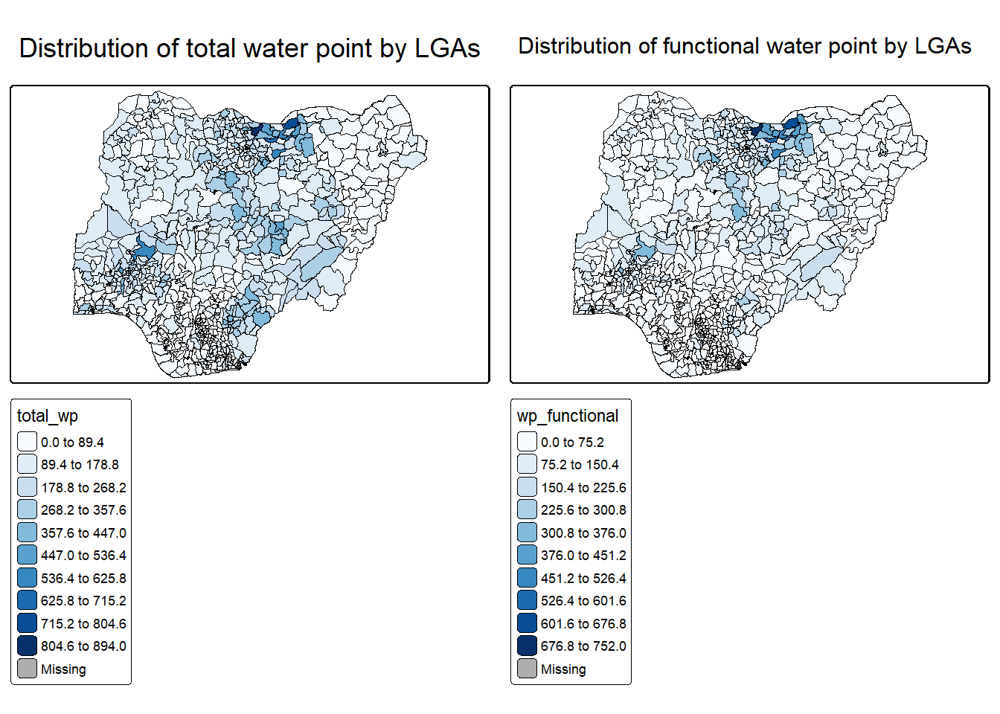
NGA_wp <- NGA_wp %>%
mutate(pct_functional = wp_functional/total_wp) %>%
mutate(pct_nonfunctional = wp_nonfunctional/total_wp)Extreme Value Maps
NGA_wp <- NGA_wp %>%
drop_na()percent <- c(0,.01,.1,.5,.9,.99,1)
var <- NGA_wp["pct_functional"] %>%
st_set_geometry(NULL)
quantile(var[,1], percent) 0% 1% 10% 50% 90% 99% 100%
0.0000000 0.0000000 0.2169811 0.4791667 0.8611111 1.0000000 1.0000000 get.var <- function(vname,df) {
v <- df[vname] %>%
st_set_geometry(NULL)
v <- unname(v[,1])
return(v)
}percentmap <- function(vnam, df, legtitle = NA, mtitle = "Percentile Map") {
percent <- c(0, 0.01, 0.1, 0.5, 0.9, 0.99, 1)
var <- get.var(vnam, df)
bperc <- quantile(var, percent)
tm_shape(df) +
tm_polygons() +
tm_shape(df) +
tm_polygons(col = vnam,
title = legtitle,
breaks = bperc,
palette = "brewer.blues",
labels = c("< 1%", "1% - 10%", "10% - 50%", "50% - 90%", "90% - 99%", "> 99%")) +
tm_title(mtitle) +
tm_layout(title.position = c("right", "bottom"))
}percentmap("total_wp", NGA_wp)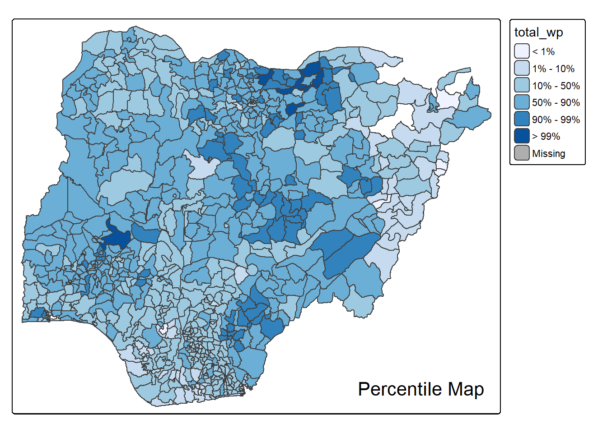
ggplot(data = NGA_wp,
aes(x = "",
y = wp_nonfunctional)) +
geom_boxplot()
boxbreaks <- function(v,mult=1.5) {
qv <- unname(quantile(v))
iqr <- qv[4] - qv[2]
upfence <- qv[4] + mult * iqr
lofence <- qv[2] - mult * iqr
# initialize break points vector
bb <- vector(mode="numeric",length=7)
# logic for lower and upper fences
if (lofence < qv[1]) { # no lower outliers
bb[1] <- lofence
bb[2] <- floor(qv[1])
} else {
bb[2] <- lofence
bb[1] <- qv[1]
}
if (upfence > qv[5]) { # no upper outliers
bb[7] <- upfence
bb[6] <- ceiling(qv[5])
} else {
bb[6] <- upfence
bb[7] <- qv[5]
}
bb[3:5] <- qv[2:4]
return(bb)
}get.var <- function(vname,df) {
v <- df[vname] %>% st_set_geometry(NULL)
v <- unname(v[,1])
return(v)
}var <- get.var("wp_nonfunctional", NGA_wp)
boxbreaks(var)[1] -56.5 0.0 14.0 34.0 61.0 131.5 278.0boxmap <- function(vnam, df,
legtitle = NA,
mtitle = "Box Map",
mult = 1.5) {
var <- get.var(vnam, df)
bb <- boxbreaks(var)
tm <- tm_shape(df) +
tm_polygons(
col = vnam,
fill.scale = tm_scale(
breaks = bb,
values = "brewer.blues",
labels = c(
"lower outlier",
"< 25%",
"25% - 50%",
"50% - 75%",
"> 75%",
"upper outlier"
)
),
fill.legend = tm_legend(title = legtitle)
) +
tm_title(mtitle) +
tm_layout(
legend.position = c("left", "top")
)
return(tm)
}tmap_mode("plot")
boxmap("wp_nonfunctional", NGA_wp)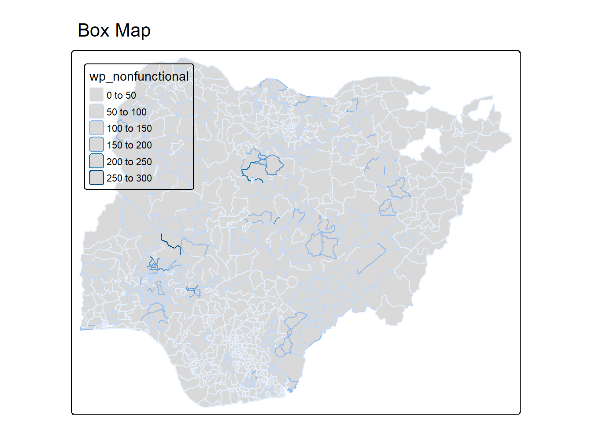